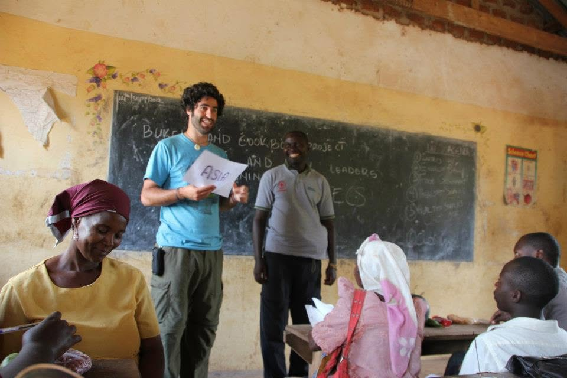

When the stakes get higher, how you work together matters more.
Culture transformation and leadership development for organizations navigating growth, transition, and complexity.
Read the field ↓
Understand the system before prescribing the change.
Most team and organizational engagements begin with discovery. Interviews, observation, data, and context reveal the patterns underneath what is getting hard.
Not every problem needs a workshop. Every intervention needs a reason.
Culture Cartography™ makes the invisible system discussable. It helps leaders see how trust, decisions, roles, power, communication, and history interact before choosing what should change.
One system. Different ways in.
The practice is organized around what needs to become more capable, not around a menu of disconnected services.
Culture transformation
Change how trust, communication, ownership, decisions, relationships, and leadership actually work.
↗ 02Leadership development
Build the conditions and experiences through which people learn to carry more complexity together.
↗ 03Executive coaching
Confidential development grounded in the real decisions, tensions, relationships, and patterns a leader is navigating.
↗Leadership for conditions without easy answers.
Class IV names what the situation demands. Leadership development builds the capacity people need to meet those demands together.

Shaped across cultures, not just conference rooms.
Breadth does not create omniscience. It teaches humility, attention to context, and the discipline to stay curious before prescribing.
Ready to understand what is actually happening?
Start with the real question.↗